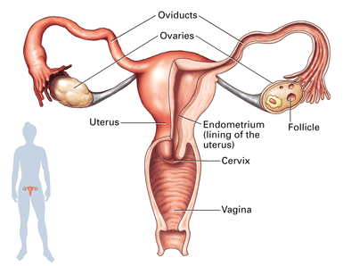
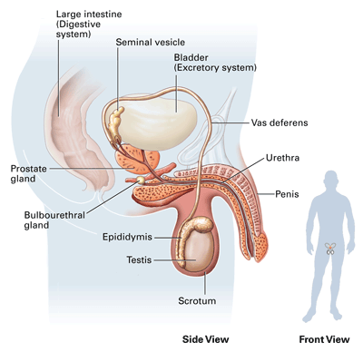
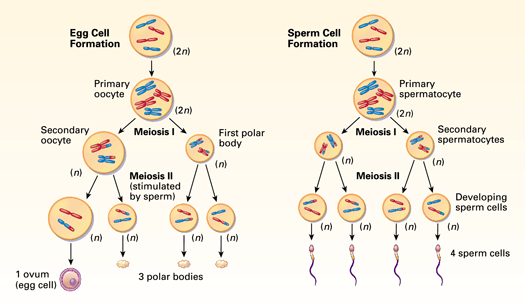

Objectives
- Identify key female and male reproductive structures and their functions.
- Compare and contrast egg cell and sperm cell development.
Key Terms
In mammalian reproduction, the female produces eggs and gives birth to offspring. Humans are no exception. The female reproductive system produces the egg cell and nurtures the developing baby. The male reproductive system generates sperm cells. In this section you will read about the specialized organs that carry out these functions. You will also read more about the processes involved in producing egg and sperm cells.
The Female Reproductive System
The female reproductive structures include the ovaries, oviducts, uterus, and vagina (Figure 33-1). Each of the two ovaries are shaped like, and are about twice the size of, an almond. They are the organs in which egg cells are produced. Within the ovaries, each developing egg cell is contained inside a follicle, a cluster of cells that surround, protect, and nourish a developing egg cell. Just above each ovary is the open end of an oviduct (also called a fallopian or uterine tube). The oviduct is a narrow tube about 10 cm long, which serves as a passageway to the uterus. The oviduct is normally the site of fertilization. The uterus is a hollow, muscular organ with thick walls, roughly the size and shape of a pear. If an egg is fertilized by a sperm cell, the uterus functions to contain and protect the developing baby. The neck of the uterus, called the cervix, connects the uterus to the vagina. The vagina is a flexible, thin-walled organ about 9 cm long. The vagina has several functions: it receives the penis and sperm during intercourse; it is the birth canal through which the baby exits during birth; and it is a passageway for menstrual flow.
|  |
Figure 33-1
The female reproductive system produces female gametes (eggs), provides a receptacle for male gametes (sperm), and provides structures for nourishing and protecting a baby. |
The Male Reproductive System
The main male reproductive structures are the testes, scrotum, epididymis, vas deferens, and penis (Figure 33-2). Sperm cells begin their development in a pair of organs called testes (singular, testis). The testes are contained in a sac-like structure called the scrotum. Since sperm cells cannot develop at normal body temperature, one function of the scrotum is to house the testes outside the main body cavity, a location that is 1° to 3°C cooler than normal body temperature. Sperm complete their development and are stored in the epididymis, a long, thin, coiled tube attached to each testis.
|  |
Figure 33-2
The male reproductive system produces sperm cells and provides a mechanism for delivering them to the female's body. |
The male reproductive system also includes the seminal vesicles, the prostate gland, and the bulbourethral glands. These glands secrete fluids that function in the transport and survival of sperm. The fluids, along with sperm cells, make up semen, the substance that is emitted during the process called ejaculation. During ejaculation, muscular contractions propel sperm from the epididymis through connecting ducts called the vas deferens and finally through the urethra. The urethra is also the tube through which urine flows. When ejaculation takes place, muscles at the base of the urethra contract and close off the outlet from the bladder. This enables the urethra to perform its dual functions. The urethra passes through the penis, an organ consisting mainly of specialized tissue called erectile tissue. Filling of this tissue with blood causes an erection.
Development of Eggs and Sperm
As you read in Chapter 9, animals that reproduce sexually produce sex cells (gametes) through the process of meiosis. Most of the cells in the human body are diploid and contain 46 chromosomes (23 pairs). However, sex cells (eggs and sperm) are haploid and contain 23 single chromosomes. You can follow the process through which these cells are produced in Figure 33-3.
|  |
Figure 33-3
This figure simplifies the processes of egg and sperm cell development by beginning with only four chromosomes. Note that for each primary oocyte that undergoes meiosis, only one of the four cells produced survives as the ovum (egg). The other three cells, called polar bodies, break down. In contrast, for each primary spermatocyte that undergoes meiosis, all four cells produced normally develop into sperm cells. |
Egg Cells Development of egg cells actually begins before a female is born, when a diploid cell in each follicle begins meiosis. The result is a primary oocyte (OH oh syt), a diploid cell that is in the prophase stage of meiosis I. At this stage the process pauses. Some of the oocytes disintegrate, and by the time a human female reaches puberty her ovaries contain about 400,000 follicles. Each follicle contains a resting primary oocyte that could develop into a mature egg cell. Beginning at puberty, and occuring approximately every 28 days, hormones cause one follicle and the oocyte within it to mature. This produces the secondary oocyte, commonly called the egg. The secondary oocyte is released when the follicle breaks open during a process called ovulation. Meiosis II is not completed unless the egg is penetrated by a sperm cell. As soon as this occurs, the secondary oocyte undergoes its final meiotic division. This forms the ovum, the mature egg cell with a haploid nucleus that is capable of fusing with the sperm nucleus.
Sperm Cells The development of sperm cells begins when males reach puberty and lasts well into old age. The process begins with the primary spermatocyte within the testis. In contrast to meiosis of the primary oocyte, which produces just one egg cell, meiosis of the primary spermatocyte produces four haploid sperm cells. Sperm cells move from the testes to the epididymis where they complete their development. A mature sperm has a tail (flagellum) that enables it to swim within the female reproductive tract. A male has the potential to produce up to 400,000,000 sperm cells each day.
Concept Check 33.1
1. List the major structures of the female reproductive system and describe the function of each.
2. List and describe the structures involved in the production and transport of sperm.
3. Describe one way in which the development of sperm cells differs from the development of egg cells.